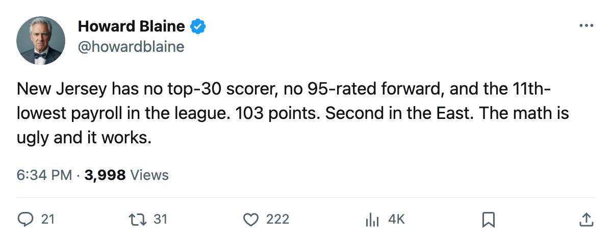
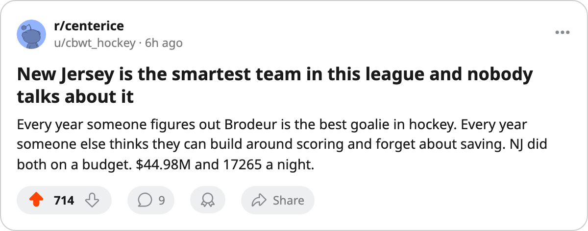

$0.44M a Point: New Jersey has the cheapest offense in hockey's top 10, the most profit in the league, and a goaltender who wins the close ones
The Devils turn $44.98M into 103 points and $39.64M in profit. Nobody else's math comes close.
 Howard BlaineSenior writer, The Blaine Rankings · The Hockey Gazette
Howard BlaineSenior writer, The Blaine Rankings · The Hockey Gazette
The piece
New Jersey has 103 points on a $44.98M payroll, a cost of $0.44M per point that no other club in the league can match. The next-best is Atlanta at $0.47M, and Atlanta plays in a division where 78 points wins 7th. New Jersey is 2nd in the Eastern Conference with 10 games left, 9 points clear of 3rd-place Tampa Bay, and the arithmetic says it stays there.
The Devils finished February with $39.64M in profit and $86.88M in revenue, both league-leading. Attendance is 17,265 a night at $80. The payroll is the 11th-lowest of 30 clubs. New Jersey takes in the most and spends less than two thirds of the league does, and the margin falls to the bottom line at $39.64M.
Garrett Turmel, whose New York Rangers spend $78.14M and hold 8th place in the East at 78 points, told The Tunnel's Jan Kowalczyk about New Jersey's construction on 2005-03-19: "There's no argument to make. And they draw, that's the thing. 17265 a night. So it isn't the market."
The goaltender who converts close margins into points
The Devils score 3.29 goals a night, the 2nd-lowest output among the league's top 10 by points, and give up 2.81, also 2nd-lowest. Their goal differential is +0.49 per game, fifth among those ten clubs. Edmonton turns a +0.03 differential into 96 points; Carolina, +0.04 into 89. New Jersey turns +0.49 into 103, a gap the goaltending accounts for.
 Martin Brodeur91 is 32 years old, has started 60 of New Jersey's 72 games, and carries a 94 overall grade from the League Scouting Bureau's Book, second of any goaltender in the league behind only
Martin Brodeur91 is 32 years old, has started 60 of New Jersey's 72 games, and carries a 94 overall grade from the League Scouting Bureau's Book, second of any goaltender in the league behind only  Marty Turco94's 96. He leads all starters with 50 or more games played in wins (43), goals against (2.41), and save percentage (.881). His contract pays $6.70M with 4 years remaining. He has no injuries on record.
Marty Turco94's 96. He leads all starters with 50 or more games played in wins (43), goals against (2.41), and save percentage (.881). His contract pays $6.70M with 4 years remaining. He has no injuries on record.
Brodeur's grade of 94 sits in a goaltending field where the Book's other top names are Marty Turco at 96 for  Dallas Stars,
Dallas Stars,  Dominik Hasek86 and
Dominik Hasek86 and  Olaf Kolzig87 both at 92, and
Olaf Kolzig87 both at 92, and  Jean-Sebastien Giguere97 at 91. What separates Brodeur from Turco, who is rated 2 points higher, are the results on the sheet: Brodeur's 2.41 GAA against Turco's 2.65, his .881 against Turco's .872, and his 43 wins against Turco's 37.
Jean-Sebastien Giguere97 at 91. What separates Brodeur from Turco, who is rated 2 points higher, are the results on the sheet: Brodeur's 2.41 GAA against Turco's 2.65, his .881 against Turco's .872, and his 43 wins against Turco's 37.
What they do without a star
No  New Jersey Devils player appears among the league's 30 highest scorers. The Devils' top-rated skaters from the Book are
New Jersey Devils player appears among the league's 30 highest scorers. The Devils' top-rated skaters from the Book are  Patrik Elias86 at 88 and
Patrik Elias86 at 88 and  Jamie Langenbrunner86 at 88, both well below the 90-plus grades carried by the scorers on clubs like
Jamie Langenbrunner86 at 88, both well below the 90-plus grades carried by the scorers on clubs like  Colorado Avalanche,
Colorado Avalanche,  Toronto Maple Leafs and
Toronto Maple Leafs and  Vancouver Canucks. New Jersey is 2nd in the East with no top-30 scorer and no 95-rated forward, and the payroll does not permit buying either.
Vancouver Canucks. New Jersey is 2nd in the East with no top-30 scorer and no 95-rated forward, and the payroll does not permit buying either.
Inside the Atlantic, New Jersey is 7 wins and 4 overtime wins against 3 regulation losses and 2 overtime losses in 16 divisional games. The season series against Philadelphia is 4-0-1 (19 goals for, 13 against, 4 of 5 games decided by one goal). Against New York Islander and New York Ranger combined, New Jersey is 3-1-0 in regulation with 2 overtime results. The Devils win by one rather than three, and Brodeur makes that cheaper than anyone else in the league can.
The remaining math
New Jersey has 10 games left: 4 inside the Atlantic and 6 outside it. The maximum is 123 points.  Tampa Bay Lightning's maximum is 112,
Tampa Bay Lightning's maximum is 112,  Washington Capitals's is 108. Only a complete collapse, 0 wins in 10 games combined with Tampa Bay winning all 9 of its remaining, would move New Jersey out of 2nd. The Devils hold 3 points in hand over Tampa Bay in games played as well: 72 to 73, with the Lightning already carrying one more defeat.
Washington Capitals's is 108. Only a complete collapse, 0 wins in 10 games combined with Tampa Bay winning all 9 of its remaining, would move New Jersey out of 2nd. The Devils hold 3 points in hand over Tampa Bay in games played as well: 72 to 73, with the Lightning already carrying one more defeat.
The Devils entered the season with a $44.98M payroll, the 11th-lowest in a 30-club league, and a roster whose best forward grades 88. As of 2005-03-21 they have 103 points, 2nd in the East, the league's best cost per point, and $39.64M sitting in the profit column. The Rangers GM called it the cleanest number in the league. He was not wrong.

